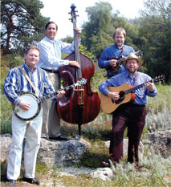

|
listenHaven't heard Lucky Break yet? Listen to some samples:NEW: Watch videos of Lucky Break's recent performances Also, read more about and listen to Lucky Break's Uniquely American, Uniquely Jewish side. Listen to Tablet Magazine reporter's Jon Kalish interview with Jerry. contactTo request a promotional package and music sampler, or to discuss how Lucky Break can distinguish your event, please contact: Jerry Wicentowski (414) 273-1880 or jerry@luckybreak.us. |
Lucky Break
Music is a Language of Many Dialects
Lucky Break Speaks Just
One — Traditional Bluegrass
Before mass culture made us all the same from suburb to shining suburb, our dialect told people where we came from. Lucky Break's home is in the music of the Appalachian hills-- in sad ballads of lost loves and hard times, in breakneck fiddle tunes that couild make the dead tap their feet, and in sweet songs of redeeming love, heavenly and otherwise. the oldest songs have traveled well for hundreds of years, becoming a tradition that transcends place and time. Bluegrass music is no longer regional. But the source remains the same and will never change.
It's the distilled essence of the life of the common folk filtered through three chords and poured from the heart that makes Lucky Break's music what it is. The pure vocals, intricate harmonies, and instrumental virtuousity are all here too, but that's the easy part. It's the feeling that separates high lonesome from high tech.
So if your recent musical listening has involved too much slick production and not enough broken heart, sample some of our songs. It might be the Lucky Break you've been waiting for.
